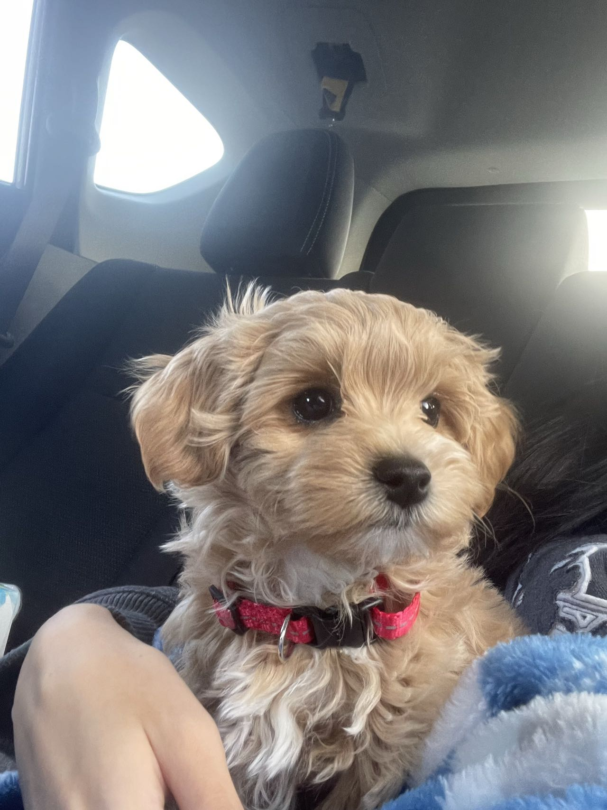
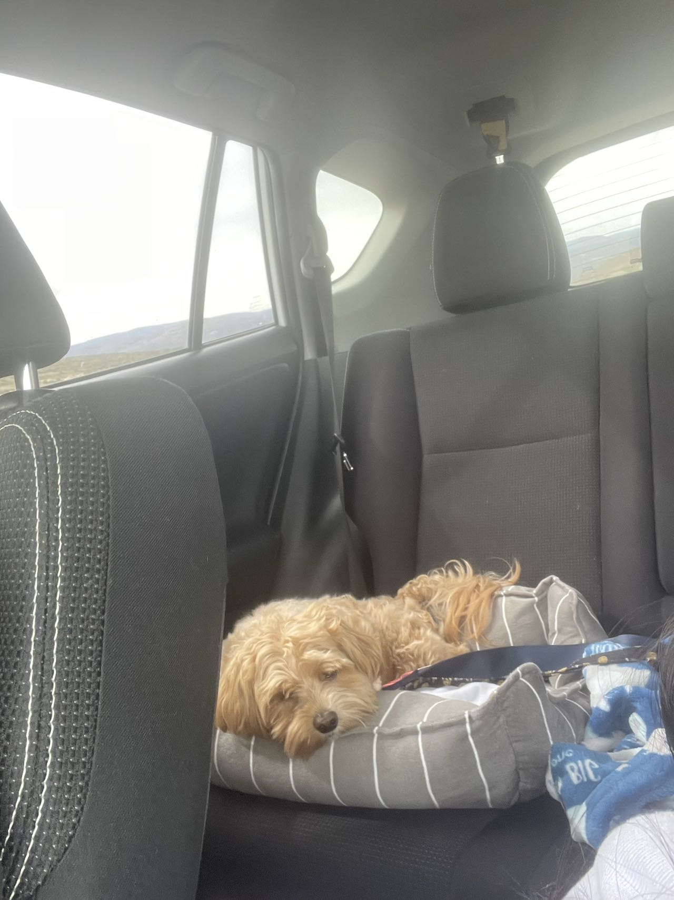
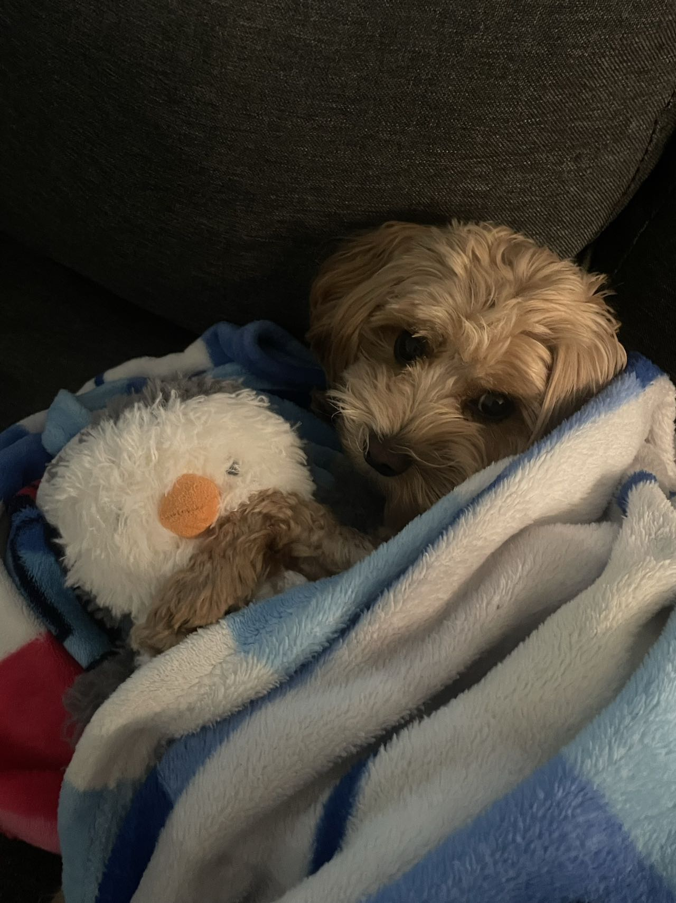

Pictures of Pippin
一些关于Pippin的图片（天呐实在有太多图片我想和你们分享了）

Here's the first time I met Pippin. We were on the way home.
这是我第一次遇见Pippin，我们在带他回家的路上。

We went for a road trip earlier in 2024. He was so tired after 10 days driving.
我们在2024年早些时候带他进行了一次漫长的美西公路旅行。在十天的驾驶之后他看起来累坏了。

This is Pippin and one of his best friends, the little penguin.
这是Pippin和他的好朋友小企鹅。（是的，我是一个毛绒企鹅爱好者）

Pippin is enjoying the free pup cup from Starbucks!
Pippin爱死了星巴克的pup cup,每次在西雅图海岸带他散步他都要去看一看。